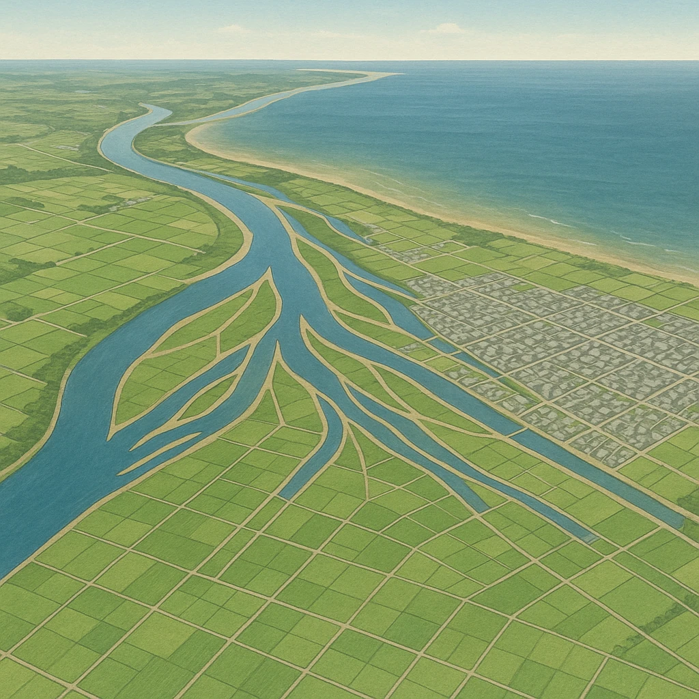

Ｂ
細かい土砂が積もる＝水田・市街地
Ａ
海
陸

Ⅲ-3
川の出口にたまる土砂
川の出口にできる
三角形
の土地
⑵ 河川の運搬した土砂が、図の
Ａ
河口
に積もってできた三角形の土地（図の
Ｂ
）を
三角州
という。
代表例＝
広島平野
（太田川の下流）
土地が低く平らで水が豊富 →
水田や市街地
に利用
低いので
洪水・高潮
に弱い
言いかえ
山ぎわは
粒が大きい
から水がしみこむ。川の出口は
粒が細かい
から水がたまる。
第11章 日本の地形・自然の特色
SEED EDUCATION